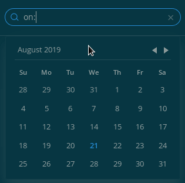

Recherche #
La zone de recherche de Mattermost renvoie les résultats (insensibles à la casse) présents dans tous les canaux dont vous êtes membre. Utilisez des modificateurs pour préciser votre recherche. Cliquez sur Aller à à droite d’un résultat pour voir ce message dans l’archive du canal.
Modificateurs de recherche #
From: et In: #
Utilisez from: pour rechercher des messages d’un·e utilisateur·trice spécifique et in: pour rechercher des messages dans des canaux spécifiques.
- Par exemple, la recherche
Mattermost in:centre-villerenvoie uniquement les messages dans le canal « Centre-Ville » qui contiennentMattermost. - La recherche
Graal in:kaamelottrenvoie les messages contenant Graal dans le canal kaamelott
Before:, After: and On: #
Utilisez before: pour trouver des messages publiés avant une date spécifiée et after: pour des messages publiés après une date spécifiée. En utilisant les deux vous pouvez choisir une amplitud de dates.
Utilisez on: pour trouver des messages à une date précise.
Vous pouvez utiliser le sélectionneur de dates ou le format YYYY-MM-DD

Exemples :
- chercher
docs after:2019-08-21renverra les messages contenant “docs” après le 21 août 2019 - chercher
docs before:2019-08-21renverra les messages contenant “docs” avant le 21 août 2019 - chercher
docs on:2019-08-21renverra les messages contenant “docs” le 21 août 2019
“Guillemets” #
Utilisez des guillemets anglais (double quote : “) pour faire une recherche sur des termes exacts.
- Par exemple, la recherche
"site web Mattermost"renvoie les messages qui contiennent la phrase entièresite web Mattermost, et pas les messages qui contiennent seulementsite,webouMattermost.
Métacaractère* #
Utilisez le caractère * pour faire des recherches avec des parties de mots.
- Par exemple, la recherche
mat*renvoie les messages qui contiennentmattermost,matièreet d’autres mots qui commencent parmat.
Hashtags #
Les hashtags (ou « mots-dièse ») sont des libellés de messages qui facilitent la recherche. Recherchez tous les messages qui contiennent un hashtag en cliquant sur ce hashtag dans un message* existant, ou en tapant le hashtag avec le symbole dièse (#) dans la barre de recherche. Créez un hashtag dans un message en utilisant le symbole dièse (#) suivi de caractères alphanumériques.
Un hashtag valide :
-
doit commencer par une lettre,
-
doit finir par un caractère alphanumérique (lettre ou chiffre),
-
doit contenir au moins 3 caractères, sans compter le
#, -
peut contenir des points, des tirets ou des underscores (
_).
Exemples :
#bug, #marketing, #v2.1, #test_utilisateur, #po.int, #mot-cle
Les hashtags ne sont pas des liens vers les canaux. Par exemple, s’il existe un canal nommé « Marketing », cliquer sur un hashtag #marketing ne vous redirige pas vers ce canal.